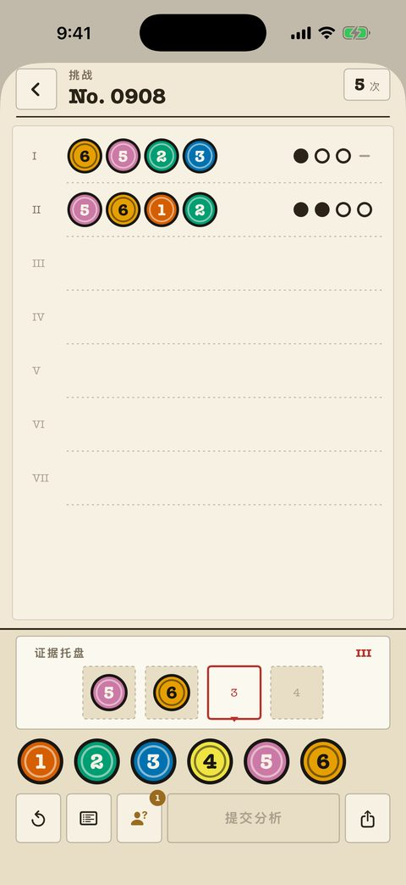
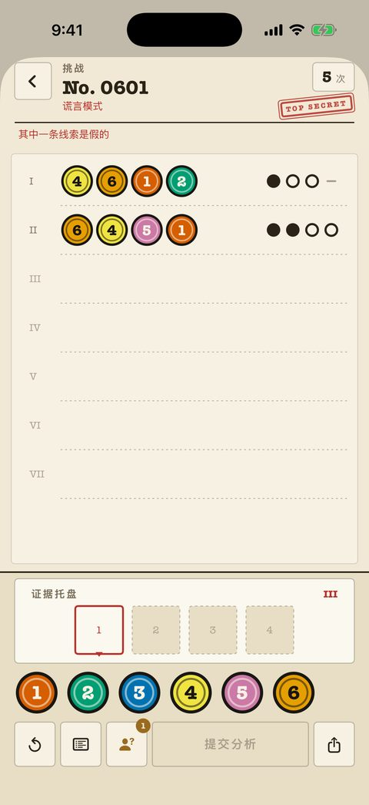
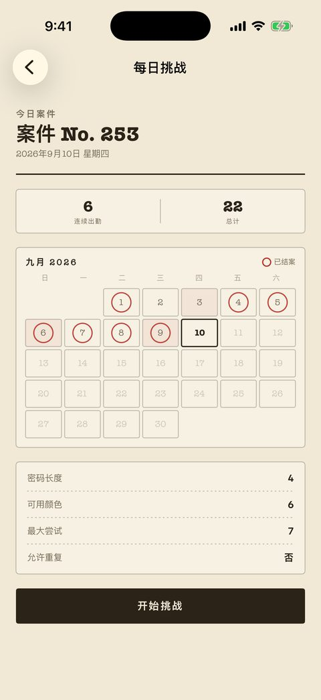

经典案件
240 案，从入门到大师，每案都是卷宗里一页编号的纸。尝试次数在右上角；标记是纯墨迹——点、圈、横——完全不依赖颜色。
- 过去的每次分析都留在纸上，方便交叉比对。
- 棋盘上的笔记可以标记已排除和已确认的颜色。
- 「形状标记」设置为每种颜色加一个专属外形。
- 前 40 案免费。
一款珠玑妙算（Mastermind）类的颜色密码推理游戏，整个界面做成一份间谍卷宗。每次分析都会返回一排墨迹标记——而在谎言卷宗里，恰好有一份报告是假的。
免费开始 · $2.99 解锁全部 · 无广告 · 无需账号
谎言卷宗 · 报告示例 4 格 · 6 色
第 I 行和第 II 行用的是同样四个颜色。第 I 行说它们都不在密码里，第 II 行说四个都在。两者不可能同时成立——其中一份报告是假的。
把颜色放进格子，提交分析。案件从 4 格 6 色起步，一直到 8 色的长密码。
调色板
格子
每提交一行，就返回四个墨迹标记。标记不会告诉你对应的是哪一格。这个空白就是谜题本身。
颜色对，位置对 颜色对，位置错 完全不在密码里
分析
报告
这四个颜色里有两个在密码中。但你仍不知道是哪两个。
经典案件的报告永远诚实。谎言案件每案伪造一行，所以严密的推理也可能撞墙。找出互相矛盾的两行，把假的那份扔掉。
第 I 行
第 II 行
第 I 行说这些颜色都不在密码里，第 II 行说四个都在。其中一份报告是假的。

240 案，从入门到大师，每案都是卷宗里一页编号的纸。尝试次数在右上角；标记是纯墨迹——点、圈、横——完全不依赖颜色。

另一份 240 案的卷宗。同样的棋盘，每案伪造一份报告，还有一枚红章提醒你别轻信纸上的字。

每天一题，人人相同。开始前就公布设置——密码长度、颜色数、尝试次数、是否允许重复。机密日会出谎言题。
| 模式 | 内容 | 获取方式 |
|---|---|---|
| 今日案件 | 每天一道共享题目，附连胜账本和小组件。 | 免费 |
| 经典案件 | 240 案，从入门到大师，标记诚实。 | 40 案免费 |
| 谎言案件 | 240 案，每案有一份报告是假的。 | 80 案免费 |
| 双人对战 | 一台手机传来传去。一人设密码，一人来破译。 | 免费 |
| 挑战好友 | 把结案的题目做成链接发出去，对方拿到同一组密码。 | 免费 |
| 自由模式 | 任意难度，无限生成棋盘。 | Pro |
| 自定义关卡 | 自己搭棋盘——长度、颜色、次数、重复。 | Pro |
Pro 一次买断 $2.99，解锁剩余 360 案、自由模式和关卡编辑器。没有订阅，没有广告，不用注册，进度只保存在本机。两套主题——档案纸与夜间桌面——应用会跟随系统语言，也可以在设置里切换。